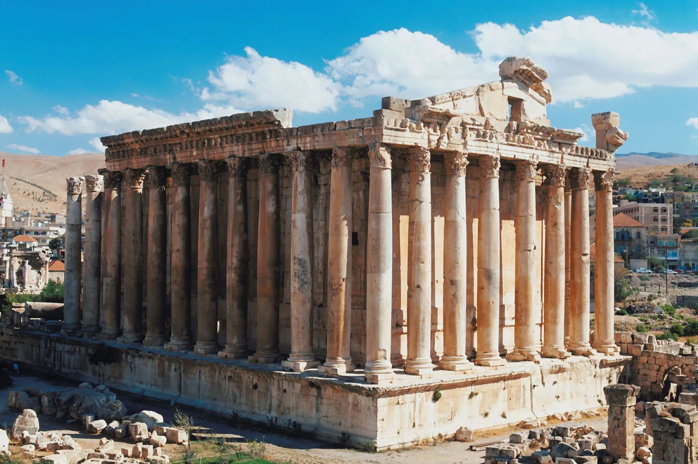

Some places to visit in my country:

Baalbek, located in eastern Lebanon, is an ancient city renowned for its spectacular Roman ruins.
It is home to some of the most impressive and well-preserved Roman temples in the world,
including the Temple of Bacchus and the Temple of Jupiter. These monumental structures,
constructed during the reign of the Roman Empire, showcase intricate architectural details and massive stone blocks,
reflecting the grandeur of ancient Roman engineering and design.
In addition to its Roman heritage, Baalbek has a rich history that dates back to Phoenician times,
with archaeological evidence suggesting the presence of settlements in the area as far back as 9000 BCE.
The city's strategic location along ancient trade routes contributed to its significance throughout various historical periods.
Today, Baalbek attracts visitors from around the world who come to marvel at its
awe-inspiring ruins and immerse themselves in its rich history.
The site is recognized as a UNESCO World Heritage Site, preserving its cultural and historical importance
for future generations to appreciate and explore.
Al Tall Tripoli, also known simply as Al Tall, is a city located in northern Lebanon.
Situated along the Mediterranean coast, it is the second-largest city in Lebanon after the capital, Beirut. Al Tall Tripoli is
renowned for its rich history, vibrant culture, and diverse population.
The city boasts a fascinating blend of ancient and modern influences,
with remnants of Phoenician, Roman, Byzantine, and Ottoman periods scattered
throughout its landscape. Its historical sites include the Crusader Castle of Raymond de
Saint-Gilles, the Great Mosque of Tripoli (built in the 7th century), and the vibrant souks
(markets) where locals and visitors alike can explore a variety of goods, from spices and textiles to traditional crafts.
Al Tall Tripoli is also known for its culinary delights, offering a wide array of delicious
Lebanese dishes and delicacies. The city's coastal location provides access to fresh seafood,
which features prominently in its cuisine.
With its bustling streets, lively markets, and rich historical heritage,
Al Tall Tripoli offers visitors a captivating glimpse into Lebanon's past and present.
Whether exploring ancient ruins, savoring local cuisine, or simply soaking in the vibrant atmosphere,
a visit to Al Tall Tripoli promises an enriching cultural experience.

Al Azer Forest is a natural gem located in northern Lebanon, known for its lush greenery, diverse wildlife,
and serene atmosphere. Nestled within the rugged landscape of the Mount Lebanon range,
this forest offers visitors a tranquil retreat away from the hustle and bustle of urban life.
The forest is characterized by its dense canopy of cedar trees, which are emblematic of Lebanon and
hold cultural significance in the region. These majestic trees provide shade and shelter to various plant
and animal species, creating a thriving ecosystem within the forest.
Al Azer Forest is not only a haven for nature enthusiasts but also a popular
destination for outdoor activities such as hiking, picnicking, and birdwatching.
Visitors can explore winding trails that lead through the forest, offering glimpses
of stunning vistas and the opportunity to encounter local flora and fauna.
In addition to its natural beauty, Al Azer Forest holds historical importance,
with ancient ruins and archaeological sites scattered throughout its expanse,
reflecting the rich heritage of the region.
Al Qammouaa Forest is a picturesque natural reserve situated in the northern region of Lebanon,
known for its pristine beauty and diverse ecosystems. Located in the Koura district, this forest
is characterized by its dense woodland comprising a variety of native tree species, including pine, oak, and cedar.
The forest's lush greenery provides a sanctuary for a wide range of wildlife, making it a haven for
nature enthusiasts and conservationists alike. Visitors to Al Qammouaa Forest can explore its network
of hiking trails, offering opportunities to observe native flora and fauna in their natural habitat.
Beyond its natural splendor, Al Qammouaa Forest holds cultural significance, with ancient ruins and
historical sites interspersed throughout its landscape. These remnants of the past add an intriguing
dimension to the forest's allure, attracting history buffs and archaeology enthusiasts.
Al Qammouaa Forest offers a tranquil escape from the hustle and bustle of city life,
inviting visitors to immerse themselves in the beauty of Lebanon's wilderness.
Whether enjoying a leisurely hike, birdwatching, or simply taking in the serene surroundings,
a visit to Al Qammouaa Forest promises an enriching experience amidst nature's bounty.